Veinte años después de que una infección fúngica masiva devastara la civilización, un hombre endurecido llamado Joel acepta la misión de escoltar a Ellie, una adolescente que podría tener la llave para una cura, ya que parece ser inmune al hongo. A lo largo de su viaje por un Estados Unidos postapocalíptico, deberán enfrentarse a grupos humanos violentos, la lucha por la supervivencia, pérdidas personales y decisiones morales extremas. Al final, Joel debe enfrentarse a qué significa realmente proteger a alguien cuando todo está en ruinas.
Temporadas y Episodios
Temporada 1
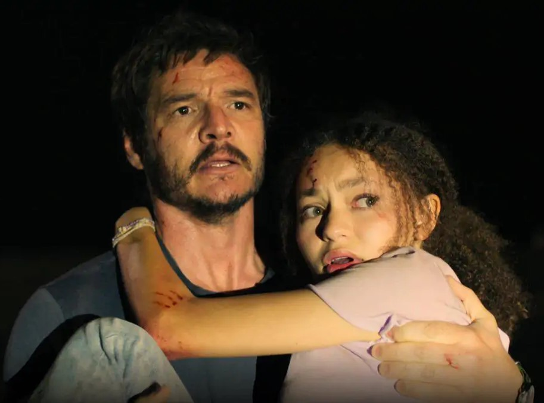
Episodio 1:When You're Lost in the Darkness.
Veinte años después de que un brote de hongos asola el planeta, los sobrevivientes Joel y Tess reciben una misión que podría cambiarlo todo.
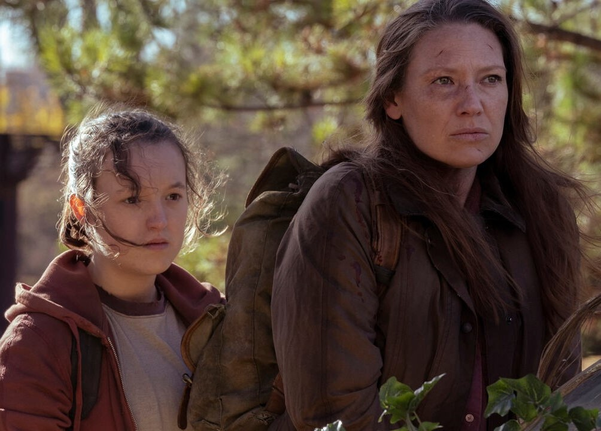
Episodio 2: Infected.
Después de escapar de la QZ, Joel y Tess se enfrentan por el destino de Ellie mientras navegan por las ruinas de un Boston abandonado hace mucho tiempo.
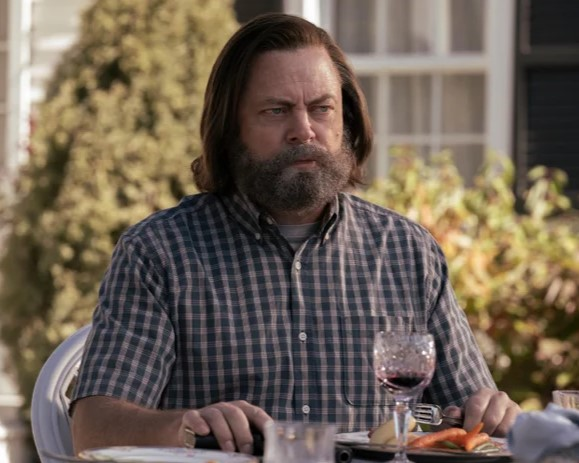
Episodio 3: Long, Long Time.
Cuando un extraño se acerca a su campamento, Bill, un superviviente, forja una conexión inesperada. Más tarde, Joel y Ellie buscan la guía de Bill.
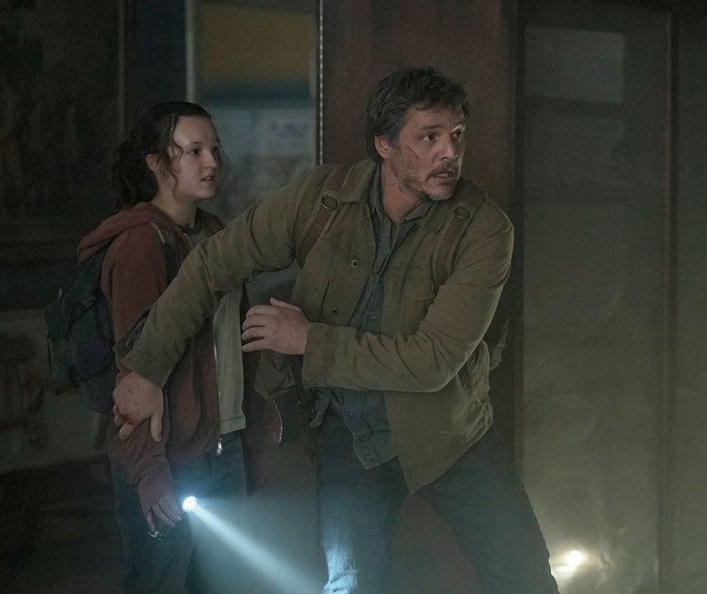
Episodio 4: Please Hold to My Hand.
Después de abandonar su camión en Kansas City, Joel y Ellie intentan escapar sin llamar la atención de un líder rebelde vengativo.
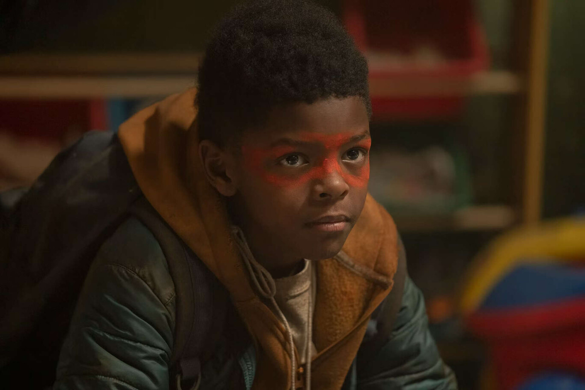
Episodio 5: Endure and Survive.
Mientras intentan evadir a los rebeldes, Joel y Ellie se cruzan con el hombre más buscado de Kansas City. Kathleen continúa su búsqueda.

Episodio 6: Kin.
Después de ignorar los consejos de los lugareños, Joel y Ellie se adentran en territorio más peligroso en busca de las Luciérnagas... y de Tommy.
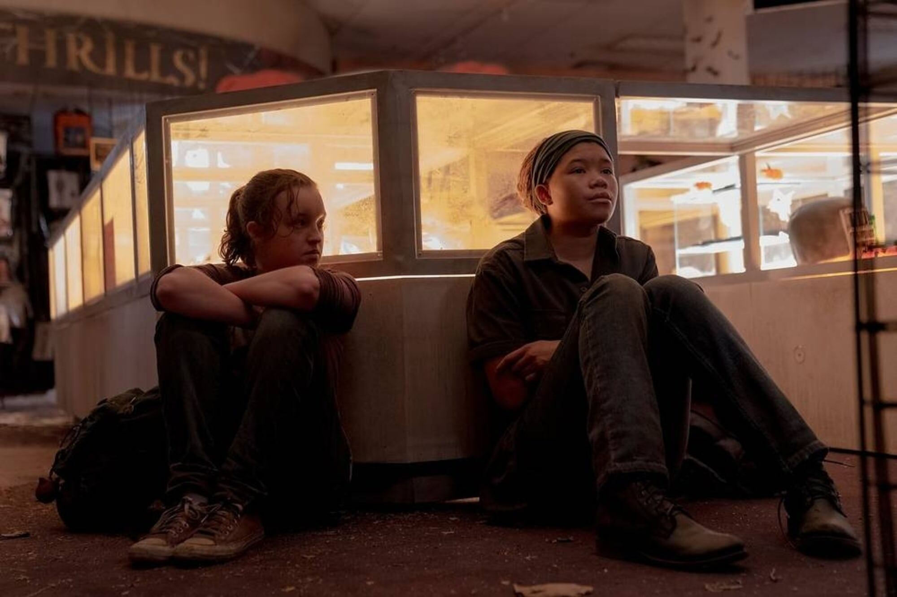
Episodio 7: Left Behind.
Mientras Joel lucha por sobrevivir, Ellie recuerda la noche que lo cambió todo.
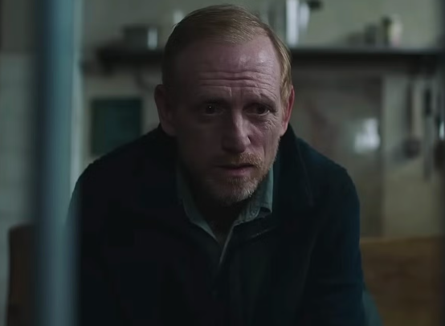
Episodio 8: When We Are in Need.
Ellie se cruza con un grupo vengativo de supervivientes y llama la atención de su líder. Un Joel debilitado se enfrenta a una nueva amenaza.
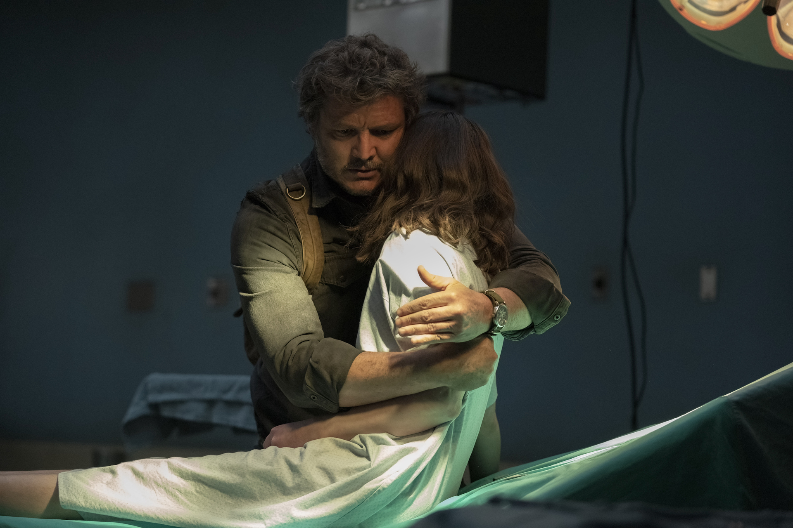
Episodio 9: Look for the Light.
Anna, embarazada, confía en un amigo de toda la vida. Más tarde, Joel y Ellie se acercan al final de su viaje.
Temporada 2
Cinco años después de lo ocurrido en la primera temporada, Joel y Ellie ahora viven relativamente estables en Jackson, Wyoming, junto con otros sobrevivientes como Dina y Tommy. Pero la paz no dura: Ellie debe confrontar verdades dolorosas del pasado, incluyendo las mentiras que rodean lo que le pasó a los Fireflies, mientras nuevas amenazas emergen, tanto infectados como humanos, y aparecen personajes esenciales como Abby, cuyas acciones impulsan a Ellie a buscar venganza. La temporada profundiza en las consecuencias emocionales de lo que hicieron, delige entre justicia, culpa y redención, mientras el mundo fuera de Jackson se vuelve cada vez más peligroso.
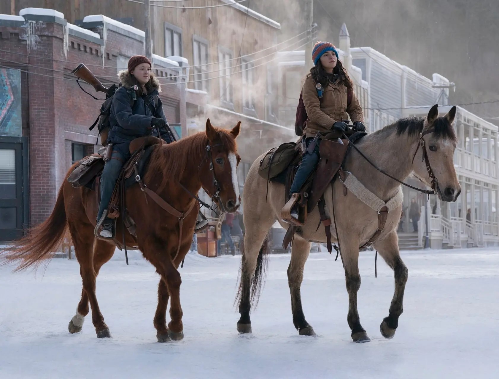
Episodio 1: Future Days.
Cinco años después, mientras Joel busca ayuda para recomponer su relación con una Ellie distante, el joven de 19 años se enfrenta a una nueva amenaza.
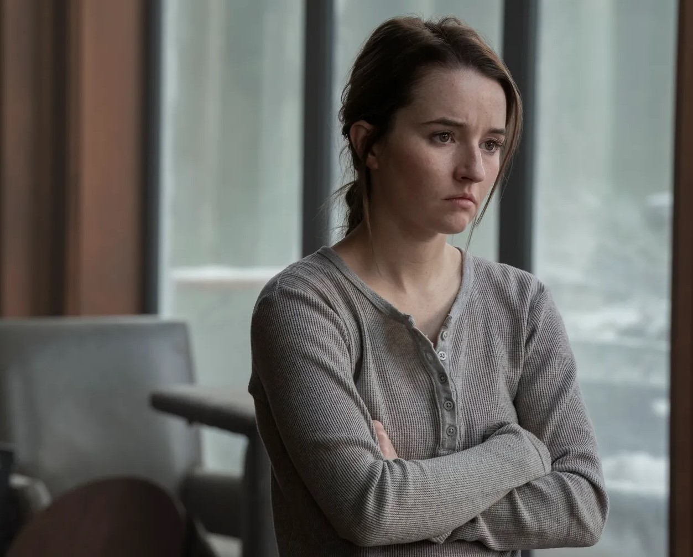
Episodio 2: Through the Valley.
Mientras Abby sopesa sus opciones, Jackson Hole se prepara para una tormenta que se avecina en medio de crecientes informes de infectados.
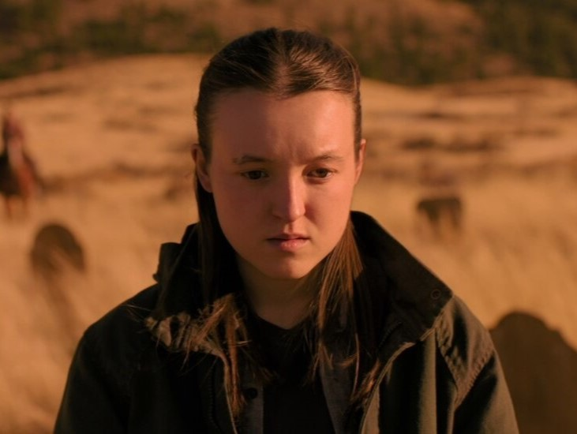
Episodio 3: The Path.
Después de que Dina comparte información crucial, Ellie se prepara para presentar una petición al ayuntamiento. Cerca de Seattle, un grupo religioso huye de una guerra.
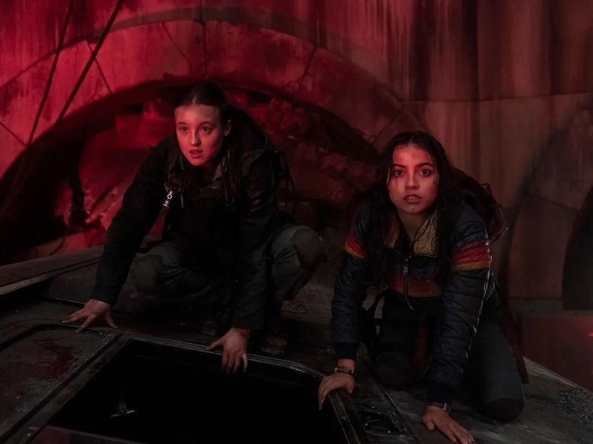
Episodio 4: Day One.
En Seattle, Ellie y Dina se encuentran en medio de una brutal batalla entre los celosos Seraphitas y una milicia despiadada.
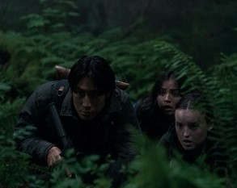
Episodio 5: Feel Her Love.
Mientras el WLF hace un descubrimiento peligroso, Ellie se enfrenta a una decisión crucial. Más tarde, una fuente inesperada comparte una verdad impactante.
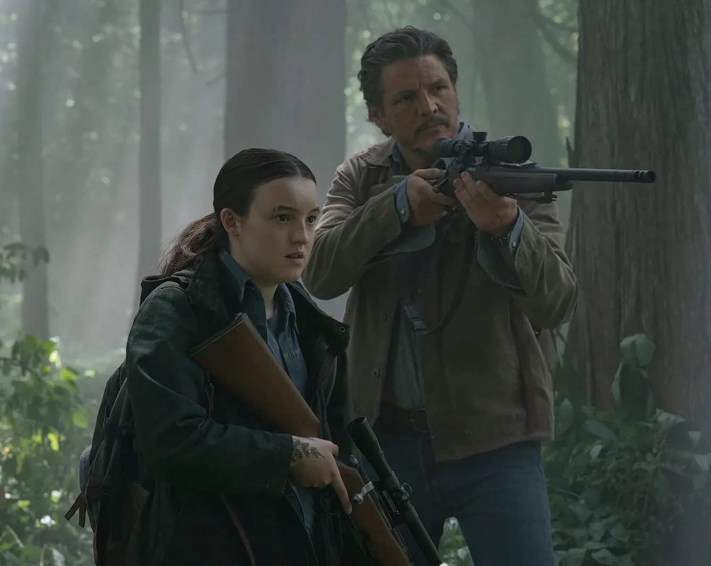
Episodio 6: The Price.
Joel sorprende a Ellie por su cumpleaños. Años después, Ellie se prepara para confrontar a Joel sobre su pasado.
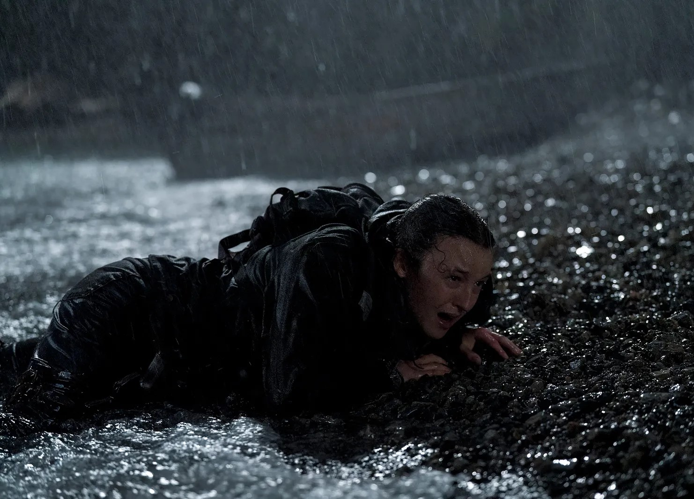
Episodio 7: Convergence.
En medio de la batalla entre las facciones en guerra de Seattle, la búsqueda de Ellie la lleva hacia una confrontación devastadora.
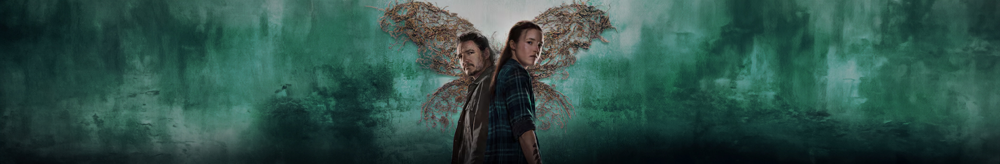
Eventos y Curiosidades
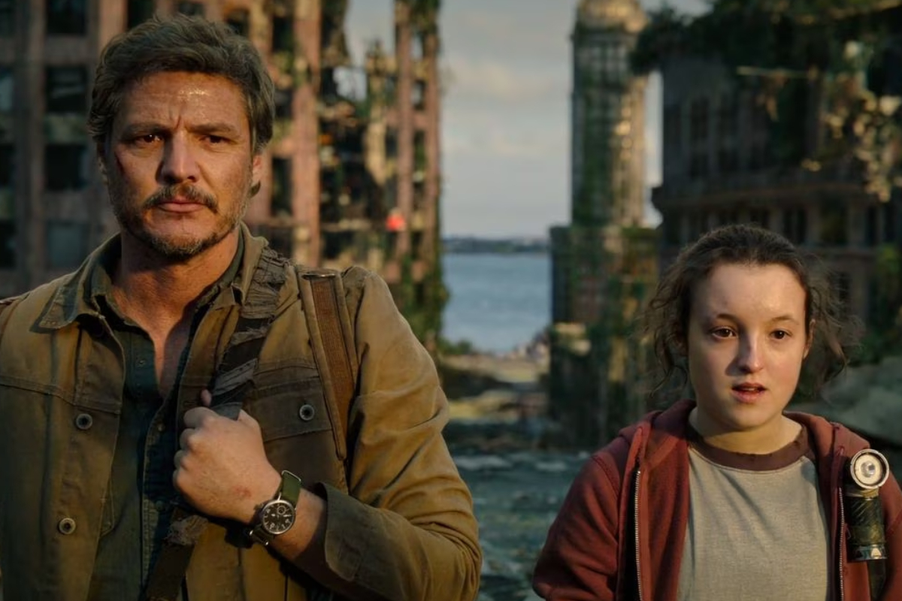
Estreno histórico:
La serie se estrenó el 15 de enero de 2023 en HBO y fue el segundo debut más visto en la plataforma en más de una década, solo detrás de House of the Dragon.
Episodio 3 (“Long, Long Time”):
Fue aclamado por la crítica y generó una gran repercusión en redes sociales, siendo considerado uno de los mejores episodios de televisión del año.
Renovación inmediata:
Tras solo dos episodios emitidos, HBO renovó oficialmente la serie para una segunda temporada.
Filmación:
Gran parte de la primera temporada se grabó en Alberta, Canadá, convirtiéndose en una de las producciones televisivas más costosas de la historia de Canadá.
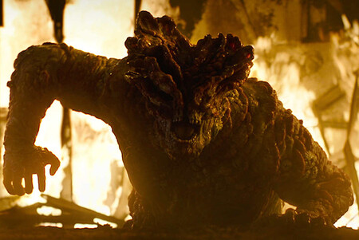
Curiosidades
Actores del juego en la serie:
Troy Baker (Joel en el juego), Ashley Johnson (Ellie), Jeffrey Pierce (Tommy) y Merle Dandridge (Marlene) tienen cameos en la serie. Merle Dandridge incluso repite el mismo papel de Marlene.
Música original:
El compositor Gustavo Santaolalla, responsable de la banda sonora de los juegos, también trabajó en la serie, manteniendo la atmósfera emocional característica.
Atención al detalle:
La producción cuidó hasta el más mínimo detalle de los escenarios; por ejemplo, las esporas del juego fueron sustituidas por los hilos de micelio para mayor realismo científico.
Presupuesto:
Cada episodio costó aproximadamente 10 a 15 millones de dólares, lo que hace que la temporada completa rondara los 100 millones.